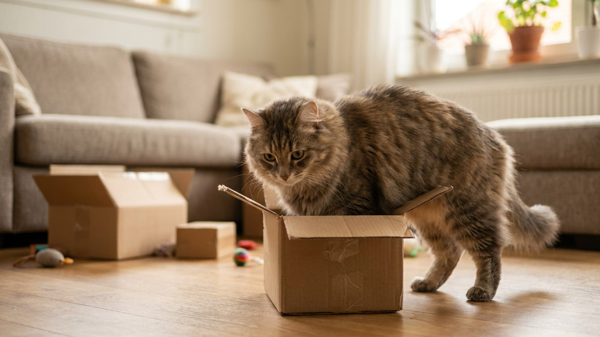

Принесли посылку — кошка уже внутри, пока вы ещё разворачиваете упаковку. Маленькая, большая, неудобная — без разницы. Это не просто мем. За тягой к коробкам стоит пять конкретных причин, одна из которых подтверждена научным экспериментом. И да — нормальный лежак может конкурировать с коробкой, если знать, что именно важно кошке.
🐾 Не уверены, что это опасно?
Опишите симптом в AnimaLife — AI-ветеринар за минуту подскажет, что в пределах нормы, а когда пора к врачу.
Кошки — теплолюбивые животные. Комфортная температура для отдыха у них выше, чем кажется: около 30–36°C. Картон — отличный теплоизолятор: он не проводит тепло, удерживает температуру тела и создаёт «микроклимат» внутри коробки. На обычном диване или полу тепло рассеивается быстрее.
Именно поэтому кошки выбирают коробки для сна, а не для игры. Сядьте в холодный угол — и кошка вас не интересует. Поставьте туда картонную коробку — она окажется внутри в течение часа.
Предок домашней кошки — одиночный охотник из засады. Укрытие с закрытыми стенками и одним выходом — идеальная позиция: видишь снаружи, тебя не видят изнутри (или так кажется). Это снижает уровень тревоги.
В 2014 году исследователи Утрехтского университета (Нидерланды) провели эксперимент с кошками в приюте. Одна группа получила коробки в клетках, другая — нет. Результат: кошки с коробками адаптировались к новой среде значительно быстрее (по шкале Cat Stress Score), меньше прятались в углу и раньше начинали вступать в контакт с людьми. Коробка работала как буфер стресса.
Это объясняет, почему кошки особенно активно ищут коробки после переезда, появления нового жильца или ремонта. Среда изменилась — нужна «база».
Кошки — животные с очень высокой потребностью в исследовательском поведении. Новый объект в среде — это потенциальная добыча, укрытие, опасность или просто «что это такое». Коробка отвечает сразу на все вопросы: нужно зайти, понюхать, потрогать лапой, убедиться, что внутри безопасно.
После первичного осмотра коробка переходит в разряд «освоенных» объектов и может стать излюбленным местом. Именно поэтому старая, давно обнюханная коробка иногда привлекательнее новой: она уже «своя».
Внутри коробки кошка находится в выгодной тактической позиции — особенно если края немного ниже головы. Она видит всё, что движется снаружи, но сама остаётся «скрытой». Это активирует охотничью стойку: характерное замирание, прижатые уши, суженные зрачки.
Если у вас дома несколько кошек, коробка становится ещё интереснее: это плацдарм для игровой охоты на сородича, который пройдёт мимо. Отсюда и внезапные «прыжки из засады» после долгого сидения в коробке.
Кошка, которая провела в коробке несколько часов, оставила там свой запах. Теперь это «её» территория, включённая в домашнюю запаховую карту. Чужая коробка становится своей — и это само по себе ценно.
Особенно заметно, если в доме несколько кошек: за «освоенную» коробку может возникать конкуренция. Это не агрессия — это нормальное территориальное поведение. Решение простое: одна коробка на кошку плюс одна запасная.
Большинство кошачьих лежаков — открытые, плоские или с низкими бортами. Кошке в них нет ощущения «стен», нет теплоизоляции снизу и с боков, нет закрытого входа. Коробка выигрывает по всем параметрам.
Чтобы лежак конкурировал с коробкой, он должен:
🐾 Питомец ведёт себя странно?
AnimaLife расшифрует поведение кошки и собаки и подскажет, что делать. Попробуйте бесплатно прямо в мессенджере.
🐾 Понравился разбор?
Подпишитесь на канал — каждый день разбираем по одному тревожному симптому у кошек и собак: что в пределах нормы, а когда пора к врачу. Подпишитесь, чтобы не пропустить разбор, который может спасти здоровье вашего питомца.
Не спешите выбрасывать коробки из посылок сразу. Если кошка переживает стрессовый период — смена хозяина, переезд, появление нового животного — картонная коробка в спокойном углу работает как безопасное убежище. Дайте ей там побыть столько, сколько нужно.
Когда кошка перестанет активно использовать коробку и вернётся к обычному поведению, можно убрать. До этого момента — не убирайте.
Кошка в коробке — это не странность и не причуда. Это грамотное управление тревогой, температурой и территорией. Один из самых честных примеров кошачьей логики.